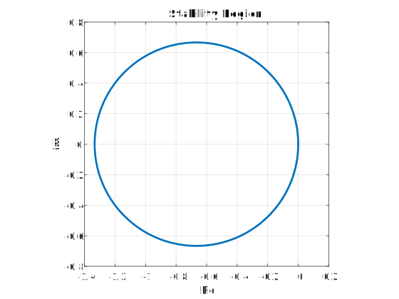
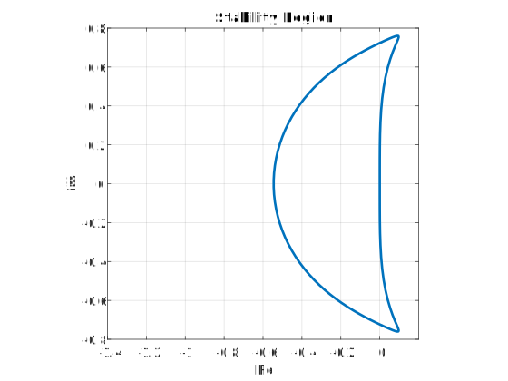
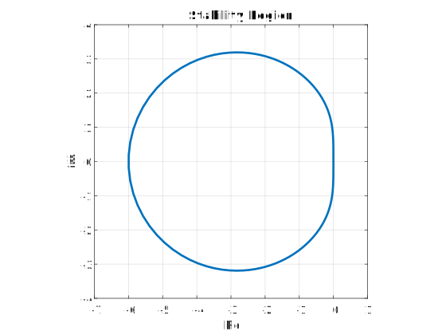
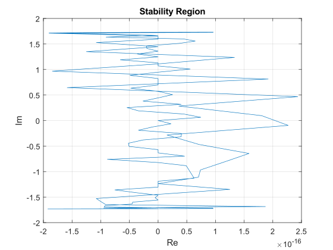

6.5. Chapter 6 Exercises#
You should try the following exercise questions first, then check with the answers.
For detailed solutions, please find them in the Moodle area for this Unit.
Exercise 6.1
Show that the method
is absolutely stable for all \(h\lambda \not\in (0,2)\).
Hint
To show that the method is absolutely stable for all \(h\lambda \not\in (0,2)\), we just need to show that the stability interval is \(h\lambda \in (-\infty, 0] \cup [2, \infty )\).
Solution to Exercise 6.1
Re-arrange the equation as
so
Thus the characteristic equation is
so
In the stability interval, it is requested that \(|z(h\lambda)|\leq 1\), so
Thus we have
which gives
therefore
the stability interval is \((-\infty, 0] \cup [2, \infty )\).
Exercise 6.2
For the method
show that
it has a stability interval of of \(\left(-\frac{4}{3},0\right)\), and
its region of stability is the circle on this interval as diameter.
Solution to Exercise 6.2
Stability interval Re-arranging the equation as
\[ y_{j+2} + 0 y_{j+1} - y_j = h \left(0 f_{j+2} + \frac{1}{2}f_{j+1} + \frac{3}{2} f_j \right) , \]so we get the characteristic equation
\[ L(z, h\lambda) = z^2 - \frac{1}{2} h\lambda z - \left(1+\frac{3}{2} h \lambda\right) =0 \]Use Matlab to determine the stability interval (let \(H=h\lambda\) in the code)
format rat disp([' H |z_1| |z_2|']); disp(['------------------------------------------']); for H=-12/6: 1/6 : 6/6 p=[1 -0.5*H -(1+1.5*H)]; r=roots(p); disp([H abs(r')]) end
Output
H |z_1| |z_2| ------------------------------------------ -2 1393/985 1393/985 -11/6 1012/765 1012/765 -5/3 1079/881 1079/881 -3/2 2889/2584 2889/2584 -4/3 1 1 -7/6 1170/1351 1170/1351 -1 985/1393 985/1393 -5/6 1/2 1/2 -2/3 0 1/3 -1/2 593/926 593/1519 -1/3 750/943 750/1193 -1/6 2080/2289 1087/1317 0 1 1 1/6 875/754 377/350 1/3 721/550 825/721 1/2 849/584 703/584 2/3 1193/750 943/750 5/6 1690/981 926/709 1 831/449 1729/1280Therefore, the stability interval is \(\left(-\frac{4}{3}, 0\right)\).
Stability region
The first and second characteristic polynomials are
\[ \rho(z) = z^2 - 1, \quad \sigma(z) = \frac{1}{2}z + \frac{3}{2} \]Let \(L(z,h\lambda)=\rho(z)-h\lambda \sigma(z)=0\) and \(z=e^{\i\theta}\)
\[\begin{split} \begin{aligned} h \lambda = \frac{\rho(z)}{\sigma(z)} = \frac{z^2 - 1}{\frac{1}{2}z + \frac{3}{2}} & = \frac{2(e^{\i\theta}-1)}{e^{\i\theta}+3} \\ & = \frac{2(e^{\i\theta}-1)(e^{-\i\theta+3})}{(e^{\i\theta}+3)(e^{-\i\theta+3})} \\ & = \frac{2\left[-6\sin^2 \theta + \i \sin \theta (6\cos \theta +2)\right]}{10+6\cos \theta} \\ & = \frac{-6\sin^2 \theta }{5+3\cos \theta} + \i \frac{\sin \theta (6\cos \theta +2)}{5+3\cos \theta} \\ & = x(\theta) + \i y(\theta) \end{aligned} \end{split}\]Let \(y(h\lambda)=0\), we get
\[ \sin \theta = 0 \quad \text{or} \quad \cos\theta=-\frac{1}{3} \]If \(\sin \theta = 0\), then
\[x(\theta)=0 \quad \text{or} \quad y(\theta)=0\]If \(\cos\theta=-\frac{1}{3}\), then
\[ x(\theta) = \frac{-6\sin^2 \theta }{5+3\cos \theta} = \frac{-6\times(1-\frac{1}{9})}{5+3\times(-\frac{1}{3})} = - \frac{4}{3}, \quad y(\theta) =0 \]
If the stability region is indeed a circle as stated, then \(x(\theta)\) and \(y(\theta)\) should satisfy
\[ \left( x - \left(-\frac{2}{3}\right) \right)^2 + y^2 = \left(\frac{2}{3}\right)^2\]Let \(X=x - \left(-\frac{2}{3}\right)\) and \(Y=y\), we can use symbolic calculation in Matlab
syms theta X = (-6*(sin(theta))^2 )/( 5+3*cos(theta) ); Y = (sin(theta)*(6*cos(theta)+2))/(5+3*cos(theta)); simplify((X+2/3)^2+Y^2)
Output
sym(4/9)
Use Matlab to plot the stability region
theta=linspace(0,2*pi,200) xi=exp(1i*theta); rho=xi.^2-1; sig=0.5*(xi+3); z=rho./sig; plot(z,'LineWidth',2) xlabel('Re') ylabel('Im') title('Stability Region') axis([-1.4 0.2 -0.8 0.8]) axis('square') xticks(-1.4:0.2:0.2) grid
Output
The circle crosses the real axis at \((-\frac{4}{3}, 0)\) and \((0, 0)\).
{kind=link}
Exercise 6.3
Find the stability interval and region for the following methods:
Third-order Adams–Bashforth method \(\displaystyle y_{j+1} = y_j + \frac{h}{12}\bigl[\,23f_j - 16f_{j-1} + 5f_{j-2}\,\bigr]\)
Third-order Adams–Moulton method \(\displaystyle y_{j+1} = y_j + \frac{h}{12}\bigl[\,5f_{j+1} + 8f_j - f_{j-1}\,\bigr]\)
Solution to Exercise 6.3
Solution
Stability interval The characteristic equation is
\[ L(z, h\lambda) = z^3 - (1+\frac{23}{12}h\lambda) z^2 + \frac{16}{12}h\lambda z - \frac{5}{12} h \lambda=0 \]Use Matlab
for H=-1:0.05:1 p=[1 -(1+23/12*H) 16/12*H -5/12*H]; r=roots(p)'; disp([H abs(r)]) end
Output
-1.0000 1.7910 0.4823 0.4823 -0.9500 1.7018 0.4823 0.4823 -0.9000 1.6131 0.4822 0.4822 -0.8500 1.5248 0.4819 0.4819 -0.8000 1.4370 0.4816 0.4816 -0.7500 1.3498 0.4812 0.4812 -0.7000 1.2633 0.4805 0.4805 -0.6500 1.1773 0.4796 0.4796 -0.6000 1.0921 0.4784 0.4784 -0.5500 1.0076 0.4769 0.4769 -0.5000 0.9239 0.5700 0.3956 -0.4500 0.8410 0.6174 0.3611 -0.4000 0.7589 0.6589 0.3333 -0.3500 0.6775 0.6984 0.3082 -0.3000 0.5966 0.7375 0.2841 -0.2500 0.5161 0.7773 0.2597 -0.2000 0.8181 0.4354 0.2339 -0.1500 0.8605 0.3535 0.2055 -0.1000 0.9048 0.2682 0.1717 -0.0500 0.9512 0.1734 0.1263 0 0 0 1 0.0500 1.0513 0.1408 0.1408 0.1000 1.1051 0.1942 0.1942so the stability interval is \((-0.55, 0]\).
Stability region The first and second characteristic polynomials are
\[ \rho(z)=z^3-z^2, \quad \sigma(z)=\frac{23}{12}z^2 - \frac{16}{12}z + \frac{5}{12} \]so
\[ H = h \lambda = \frac{\rho(z)}{\sigma(z)} =\frac{z^3-z^2}{\frac{23}{12}z^2 - \frac{16}{12}z + \frac{5}{12}} \]Use Matlab
theta=linspace(0,2*pi); xi=exp(1i*theta); rho=xi.^3-xi.^2; sig=(23*xi.^2-16*xi+5)/12; z=rho./sig; plot(z,'LineWidth',2) axis([-1.4 0.2 -0.8 0.8]) axis('square') grid on xlabel('Re') ylabel('Im') title('Stability Region')
Output

Solution
Stability interval
The characteristic equation is
\[ L(z, h\lambda) = \left(1-\frac{5}{12}h\lambda\right)z^2 - \left(1+\frac{8}{12}h\lambda\right)z + \frac{1}{12} h \lambda =0 \]Use Matlab
for H=-10:0.5:1 p=[(1-5/12*H) -(1+8/12*H) H/12]; r=roots(p)'; disp([H abs(r)]) end
Output
-10.0000 1.2281 0.1313 -9.5000 1.2078 0.1322 -9.0000 1.1858 0.1332 -8.5000 1.1618 0.1342 -8.0000 1.1355 0.1355 -7.5000 1.1066 0.1369 -7.0000 1.0747 0.1386 -6.5000 1.0394 0.1405 -6.0000 1.0000 0.1429 -5.5000 0.9558 0.1457 -5.0000 0.9059 0.1492 -4.5000 0.8492 0.1536 -4.0000 0.7844 0.1594 -3.5000 0.7096 0.1672 -3.0000 0.6228 0.1784 -2.5000 0.5220 0.1955 -2.0000 0.4058 0.2240 -1.5000 0.2774 0.2774 -1.0000 0.3872 0.1519 -0.5000 0.6084 0.0567 0 0 1 0.5000 1.6524 0.0319 1.0000 2.8062 0.0509so the staiblity interval is \([-6, 0]\).
Stability region
The first and second characteristic polynomials are
\[ \rho(z) = z^2 - z, \quad \sigma(z) = \frac{5z^2 + 8 z - 1}{12} \]Use Matlab
theta=linspace(0,2*pi,200); xi=exp(1i*theta); rho=xi.^2-xi; sig=(5*xi.^2+8*xi-1)/12; z=rho./sig; plot(z,'LineWidth',2) axis([-7 1 -4 4]) axis('square') grid on xlabel('Re') ylabel('Im') title('Stability Region')
Output

{kind=link}
{kind=link}
Exercise 6.4
Show that the method
has an interval of absolute stability of \((-\infty,0]\). Explain how you can verify your results.
Solution to Exercise 6.4
The characteristic polynomial is
To ensure
we should let
therefore, the stability interval is \((-\infty, 0]\).
Exercise 6.5
Show that the Simpson’s rule:
has no interval of absolute stability. Try to verify your results by plotting the region of absolute stability.
Solution to Exercise 6.5
Re-arrange the equation
The characteristic equation
Let \(H=h\lambda\)
Matlab code
format short
for H=-5:0.5:1
p=[(1-H/3) (-4/3*H) -(1+H/3)];
r=roots(p)';
disp([H abs(r)]);
end
Output
-5.0000 2.3956 0.1044
-4.5000 2.3136 0.0864
-4.0000 2.2214 0.0643
-3.5000 2.1175 0.0363
-3 0 2
-2.5000 1.8669 0.0487
-2.0000 1.7165 0.1165
-1.5000 1.5486 0.2153
-1.0000 1.3660 0.3660
-0.5000 1.1779 0.6064
0 1 1
0.5000 1.6490 0.8490
1.0000 2.7321 0.7321
From the output we can see that the modulus of one root is alway larger than \(1\), so the method has no stability interval.
Now let’s have a look at the stability region
Matlab code
theta=linspace(0,2*pi);
xi=exp(1i*theta);
rho=xi.^2-1;
sig=(xi.^2+4*xi+1)/3;
z=rho./sig;
plot(z)
xlabel('Re')
ylabel('Im')
title('Stability Region')
grid on
Output
{kind=link}